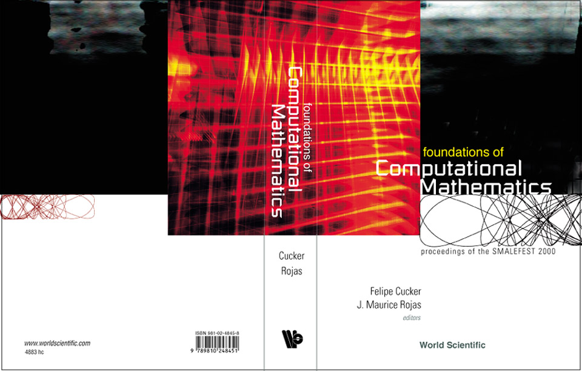

(You can click HERE to see a list with
downloadable files and further bibliographic information, but without
abstracts.)
We derive efficient algorithms for coarse approximation of algebraic
hypersurfaces, useful for estimating the distance between an input
polynomial zero set and a given query point. Our methods work best on sparse
polynomials of high degree
(in any number of variables) but are nevertheless completely general.
The underlying ideas, which we take the time to describe in an elementary way,
come from tropical geometry. We then apply our methods to find roots of
n×n systems near a given
query point, thereby reducing a hard algebraic problem to high-precision linear
optimization. We prove new upper and lower complexity estimates along the way.
The Shub-Smale τ-Conjecture is a hitherto unproven statement (on
integer roots of polynomials) whose truth implies both a variant of
pp!neq!np (for the BSS model over C) and the hardness of
the permanent. We give alternative conjectures, some clearly easier to prove,
whose truth still implies the hardness of the
permanent. Along the way, we discuss new upper bounds on the number of
p-adic valuations of roots of certain sparse polynomial systems,
culminating in a connection between quantitative p-adic geometry and
complexity theory.
Given any complex Laurent polynomial f,
Amoeba(f) is the image of its complex zero set under the
coordinate-wise log absolute value map. We give an efficiently constructible
polyhedral approximation, ArchTrop(f), of
Amoeba(f), and derive
explicit upper and lower bounds, solely as a function
of the sparsity of f, for the Hausdorff distance between these two sets.
We thus obtain an Archimedean analogue of Kapranov's Non-Archimedean Amoeba
Theorem
and a higher-dimensional extension of earlier estimates of Mikhalkin and
Ostrowski. We then show that deciding whether a given point lies in
ArchTrop(f)
is doable in polynomial-time, for any fixed dimension, unlike the corresponding
question for Amoeba(f), which is NP-hard
already in one variable.
We present a deterministic 2O(t)q(t-2)/(t-1)+o(1)
algorithm to decide whether a univariate polynomial f, with exactly t monomial
terms and degree <q, has a root in Fq. Our
method is the first with complexity sub-linear in q when t is
fixed. We also prove a structural property for the
nonzero roots in Fq of any t-nomial: the nonzero
roots always admit
a partition into no more than 2(t-1)1/2(q-1)(t-2)/(t-1)
cosets of two subgroups S1⊆ S2 of
Fq*.
This can be thought of as a finite field analogue of Descartes' Rule.
A corollary of our results is the first
deterministic sub-linear algorithm for detecting common degree one factors of
k-tuples of t-nomials in Fq[x]
when k and t are fixed.
When t is not fixed we show that, for p prime, detecting roots in
Fp for f is NP-hard with respect
to BPP-reductions.
Finally, we prove that if the
complexity of root detection is sub-linear (in a refined sense),
relative to the straight-line program encoding, then
NEXP⊈P/Poly.
An invited book review for the Bulletin of the American Mathematical
Society.
Consider a system F of n polynomials in n variables, with a
total of n+k distinct exponent vectors, over any local field
L. We discuss conjecturally tight upper and lower
bounds on the maximal number of non-degenerate roots F can have over L,
with all coordinates having fixed sign or fixed first digit, as a function of
n and k only. For non-Archimedean L, we give the first non-trivial lower
bounds for the case k-1≤ n; and for general L we give new explicit
extremal systems when k=2 and n≥1. We also briefly review the background
behind such bounds, and their application, including connections to the
Shub-Smale τ-Conjecture and the P vs.
NP Problem. One of our key tools
is the construction of combinatorially constrained tropical varieties with
maximally many intersections.
We present algorithms revealing new families of polynomials
allowing sub-exponential
detection of p-adic rational roots, relative to the sparse
encoding. For instance, we show that the case of honest n-variate
(n+1)-nomials is doable in NP and, for certain special cases
with p exceeding the Newton polytope volume, in constant time.
Furthermore, using the theory of linear forms in
p-adic logarithms, we prove that the case of trinomials in
one variable can be done in NP. The best previous complexity bounds for
these problems were EXPTIME or worse. Finally, we prove that detecting
p-adic rational roots for sparse polynomials in one variable is NP-hard
with respect to randomized reductions. The last proof makes use of
an efficient construction of primes in certain arithmetic progressions.
The smallest n where detecting p-adic rational roots for n-variate
sparse polynomials is NP-hard appears to have been unknown.
In their classic 1914 paper,
Polya and Schur introduced and characterized two types of
linear operators acting diagonally on the monomial basis of
R[x], sending real-rooted polynomials (resp. polynomials
with all nonzero roots of the same sign) to real-rooted polynomials.
Motivated by fundamental properties of amoebae and discriminants discovered
by Gelfand, Kapranov, and Zelevinsky, we introduce two new natural classes of
polynomials and describe diagonal operators preserving these new classes. A
pleasant circumstance in our description is that these classes have a
simple explicit description, one of them coinciding with
the class of log-concave sequences.
We show that maximizing n-variate (n+2)-nomials
(with real exponents and coefficients) can be
done in time polynomial in the sparse encoding, relative to
the BSS model over R. The best previous complexity bounds were exponential in
the sparse encoding, even for n fixed. Along the way, we extend the
theory of A-discriminants to real exponents and exponential sums,
and find new and natural
NPR-complete problems. We also
discuss high
precision polynomial-time approximation schemes, extending the classical
notion of an FPTAS to the real numbers.
We show that maximizing n-variate (n+2)-nomials
(with real exponents and coefficients) can be
done in time polynomial in the sparse encoding, relative to
the BSS model over R. The best previous complexity bounds were exponential in
the sparse encoding, even for n fixed. Along the way, we extend the
theory of A-discriminants to real exponents and exponential sums,
and find new and natural
NPR-complete problems.
Suppose f is a real univariate polynomial of degree D with
maximum coefficient bit size h and exactly m monomial
terms. Relative to the sparse input size m+h+log(D), polynomial-time
algorithms for counting the positive roots of such polynomials are
known only for m≥3. We study the case m=4,
focussing on two potential techniques: sums of squares and
A-discriminants. In particular, we find explicit
obstructions to expressing positive definite sparse polynomials
as sums of squares of few sparse polynomials. We also give an
algorithm --- based on A-discriminant theory --- for counting positive
roots of most tetranomials in polynomial-time (relative to the sparse
input size).
To prove that a polynomial is nonnegative on R^n one can try to show that
it is a sum of squares of polynomials (SOS). The latter problem is now known
to be reducible to a semidefinite programming (SDP)
computation much faster than classical algebraic methods (see, e.g., [Par03]),
thus enabling new speed-ups in algebraic optimization. However,
exactly how often nonnegative polynomials are in fact sums of squares
of polynomials remains an open problem. Blekherman was
recently able to show [Ble03] that for degree k polynomials in n variables ---
with k≥4 fixed --- those that are SOS occupy a vanishingly small
fraction of those that are nonnegative on R^n, as n tends to infinity.
With an eye toward the case of small n, we refine Blekherman's bounds
by incorporating the underlying Newton polytope, simultaneously sharpening
some of his older bounds along the way. Our refined asymptotics show that
certain Newton polytopes may lead to families of polynomials where
efficient SDP can still be used for most inputs.
We show that detecting real roots for honestly n-variate (n+2)-nomials
(with integer exponents and coefficients) can be done in time polynomial in the
sparse encoding for any fixed n. The best previous complexity
bounds were exponential in the sparse encoding, even for n fixed.
We then give a characterization of those functions k(n) such that the
complexity of detecting real roots for n-variate (n+k(n))-nomials transitions
from P to NP-hardness as n tends to infinity. Our proofs follow in large part
from a new complexity threshold for deciding the vanishing of A-discriminants
of n-variate (n+k(n))-nomials. Diophantine approximation, through linear forms
in logarithms, also arises as a key tool.
(This is an extended abstract for Refined Asymptotics
for Multigraded Sums of Squares. The extended abstract was
accepted for presentation at MEGA 2009.)
We show that deciding whether a univariate polynomial
has a p-adic rational root can be done in NP for
most inputs. We also prove a polynomial-time upper bound
for trinomials with suitably generic p-adic Newton polygon.
We thus improve the best previous complexity upper bound of
EXPTIME. We also prove an unconditional complexity
lower bound of NP-hardness with respect to randomized reductions
for general univariate polynomials. The best previous lower bound assumed an
unproved hypothesis on the distribution of primes in arithmetic progression.
We also discuss how our results complement analogous results over the real
numbers.
In a sequel to this paper, we extend our complexity results
to systems of multivariate polynomials.
An invited book review for the journal Foundations of Computational
Mathematics, published by Springer-Verlag.
Consider real bivariate polynomials f and g, respectively
having 3 and m monomial terms. We prove
that for all m≥3, there are systems of the form (f,g) having
exactly 2m-1 roots in the positive quadrant.
Even examples with m=4 having 7 positive roots
were unknown before this paper, so we detail
an explicit example of this form. We also present an O(n^{11})
upper bound for the number of diffeotopy types of the real zero
set of an n-variate polynomial with n+4 monomial terms.
We prove the existence of systems of n polynomial equations in n variables
with a total of n+k+1 distinct monomial terms possessing floor(1+n/k)^k
nondegenerate positive solutions. This shows that the recent upper
bound of (e^2+3)/4 2^{k choose 2} n^k for the number of nondegenerate positive
solutions has the correct order for fixed k and large n.
We also adapt a method of Perrucci to show that there are fewer than
(e^2+3)/4 2^{k+1 choose 2} 2^n n^{k+1} connected components in a smooth
hypersurface in the positive orthant of R^n defined by a polynomial with n+k+1
monomials. Our results hold for polynomials with real exponents.
We reveal a natural algebraic problem whose complexity appears to interpolate
between the well-known complexity classes BQP and
NP:
* Decide whether a univariate polynomial with exactly m
monomial terms has a p-adic rational root.
In particular, we show that while (*) is doable
in quantum randomized polynomial time when m=2 (and
no classical randomized polynomial time algorithm is known), (*) is
nearly NP-hard for general m: Under a
plausible hypothesis involving primes in arithmetic progression
(implied by the Generalized Riemann Hypothesis for certain cyclotomic fields),
a randomized polynomial time algorithm for (*)
would imply the widely disbelieved inclusion
NP ⊆ BPP. This type of quantum/classical
interpolation phenomenon appears to be new.
Suppose X is the zero set in (C^*)^n of a finite collection of finite
products of polynomials in Z[x_1,...,x_n]. Also let T be any multiplicative
translate of an algebraic subgroup of (C^*)^n. We prove that we can decide
whether X contains T (resp. X intersects T) within coNP
(resp. NPNP). In
particular, we can detect within NPNP whether X
contains a point all of
whose coordinates are dth roots of unity. The best previous complexity bound
for our two main problems was PSPACE (or PPNP^NP
or AM, under successively
stronger unproven number-theoretic hypotheses). Independent of any
number-theoretic or complexity-theoretic hypotheses, our algorithms
appear to be practical. We illustrate this through several examples and
comparisons with earlier complexity bounds. We thus obtain the first
non-trivial families of multivariate polynomial systems where deciding the
existence of complex roots can be done unconditionally in the polynomial
hierarchy -- a family of complexity classes lying below
PSPACE and above NP.
We also discuss how our results can be viewed as an algorithmic counterpart to
Laurent's solution of Chabauty's Conjecture
We present a new, far simpler family of counter-examples to
Kushnirenko's Conjecture. Along the way, we illustrate
a computer-assisted approach to finding sparse polynomial
systems with maximally many real roots, thus shedding light on
the nature of optimal upper bounds in real fewnomial theory.
We use a powerful recent formula for the
A-discriminant, and give new bounds on the topology of certain
A-discriminant varieties. A consequence of the latter result
is a new upper bound on the number of topological types of certain real
algebraic sets defined by sparse polynomial equations.
We present a new method for coordinated motion planning of multiple mobile
robots. The position in 2-D of each mobile robot is mapped to a complex number
and a time varying polynomial contains information regarding
the current positions of all robots, the degree of the
polynomial being the nubmer of robots and the roots of the
polynomial repsenting the position in 2-D of the robots at
a given time., This polynomial is constrcted by finding a path
parameterized in time from the initial to the goal polynomial which represents
the initial and goal positions of the robots so that the
discriminant variety or the set of polyomali with mulitiple
roots is avoided in polynomial space . This is
equivalent to saying there is no collision between any
two robots in going from initial position to goal position.
Expository paper for Workshop on Extensions of Hilbert's Tenth Problem
at the American Institute of Mathematics.
In recent years, many methods have been developed for accurately placing
protein atoms (both main chain and side chain). However, a provably optimal
method (from the point of view of practical computational complexity) for
converting torsion angle coordinates to Cartesian coordinates is still
unknown. We examine two methods, and two variants of each method, for
robustness and execution time. The first method involves rotation matrices,
and the variants are (a) a simple and direct 3 x 3 matrix formula and (b) a
quaternion-based method. The second method used is the ab initio prediction
algorithm embedded in the well-known Rosetta software. We create a variant
that requires significantly fewer operations resulting in a 19% increase
in computational speed. For practical applications, where tens of
thousands of models are created and analyzed, this increase is of great use.
Our method appears to be the most efficient at present and is suggested for
everyday use.
Fewnomial theory began with explicit bounds --- solely in terms of
the number of variables and monomial terms --- on the number of
real roots of systems of polynomial equations.
Here we take the next logical step of investigating the corresponding
existence problem: Let FEAS_R denote the problem of deciding whether a
given system of multivariate polynomial equations with integer coefficients
has a real root or not. We describe a phase-transition for when m is
large enough to make FEAS_R be NP-hard, when restricted to
inputs consisting of a single n-variate polynomial with exactly m monomial
terms: polynomial-time for m≥n+2 (for any fixed n) and
NP-hardness for m≥n+n^c (for n varying and any
fixed c>0). Because of important connections
between FEAS_R and A-discriminants, we then study some new families of
A-discriminants whose signs
can be decided within polynomial-time. (A-discriminants contain all known
resultants as special cases, and the latter objects are central in algorithmic
algebraic geometry.) Baker's Theorem from diophantine approximation
arises as a key tool. Along the way, we also derive new quantitative
bounds on the real zero sets of n-variate (n+2)-nomials.
Expository paper for Workshop on Amoebas and Tropical Geometry at the
American Institute of Mathematics.
The Shub-Smale Tau Conjecture is a hypothesis relating
the number of integral roots of a polynomial f in one variable and
the Straight-Line Program (SLP) complexity of f.
A consequence of the truth of this conjecture is that,
for the Blum-Shub-Smale model over the complex numbers,
P differs NP. We show that the Tau Conjecture follows from the
truth of two simpler conjectures. We then prove modified versions
of the latter two conjectures which, while not strong enough to
yield the Tau Conjecture, nevertheless yield new sharper lower bounds for the
additive complexity of polynomials.
Our results follow from a new sharper p-adic analogue of earlier work
relating real algebraic geometry to additive complexity. For instance, we
can show that a nonzero univariate polynomial of additive complexity s
can have no more than 1+s!s^2 15^s=O(3^{s log s}) roots in the
2-adic rational numbers Q_2, thus dramatically
improving an earlier result of the author. This
immediately implies the same bound on the number of ordinary
rational roots, whereas the best previous upper bound via
earlier techniques from real algebraic geometry was a quantity in
Omega((22.6)^{s^2}).
Let HN denote the problem of determining whether
a system of multivariate polynomials with integer
coefficients has a complex root. It has been known at least since the
1970's that HN in P implies P=NP. However, the
inverse implication was an open problem until around 1996 when Pascal Koiran
proved that HN not in P implies that P differs from NP,
assuming the Generalized Riemann Hypothesis (GRH). We show that the
assumption of GRH in the latter
implication can be replaced by any one of three weaker
hypotheses from analytic number theory. In particular,
all our hypotheses still hold even under certain failures of GRH,
including the presence of Siegel-Landau zeroes. We thus obtain a new
application of Dedekind zero estimates to computational algebraic geometry.
Along the way, we also derive a new and sharper explicit estimate on
rational univariate reduction and employ some new (unpublished) analytic
estimates of Silberman, both of which may be of independent interest.
Our results also extend easily to the harder problem of determining the
dimension of a complex algebraic set.
We derive an improved upper bound for the VC-dimension of
neural networks with polynomial activation functions.
This improved bound is based on a result of Rojas
on the number of connected components of a semi-algebraic set.
Let f be a degree D univariate polynomial with real coefficients
and exactly m monomial terms. We show that in the special case
m=3 we can approximate (within epsilon) all the roots of f in any closed
interval of length R using just O((log D)(log log R/epsilon) + log^2 D)
arithmetic
operations. In particular, we can count the number of roots in any interval
using just O((log^2 D)) arithmetic operations, and the fastest previous
algorithms for both problems had arithmetic complexity superlinear in D.
We also discuss conditions under which our algorithms can be extended
to general m and certain multivariate fewnomial systems.
We describe a method, based on rational univariate reduction (RUR),for
computing roots of systems of multivariate polynomials withrational
coefficients. Our method enables exact algebraiccomputations with the root
coordinates and works even if the underlyingset of roots is
positive-dimensional. We describe several applications,with special emphasis
on geometric modeling. In particular, we describea new implementation that has
been used successfully on certaindegenerate boundary evaluation problems.
Let f:=(f_1,...,f_n) be a random polynomial system with
fixed n-tuple of supports. Our main result is an upper bound on the
probability that the condition number of f in a region U is larger than
1/epsilon. The bound depends on an integral of a differential form on a toric
manifold and admits a simple explicit upper bound when the Newton polytopes
(and underlying covariances) are all identical.
We also consider polynomials with real coefficients and give bounds
for the expected number of real roots and (restricted) condition number.
Using a Kahler geometric framework throughout, we also express the expected
number of roots of f inside a region U as the integral over U of a certain
mixed volume form, thus recovering the classical mixed volume when
U = (C^*)^n.
This paper introduces three novel methods to evaluate
attitude and position from vector observations using a vision-based technology
camera. The first approach, called Linear Algebra Resection Approach (LARA)
, solves for attitude and position simultaneously and can be used in the
lost-in-space case, when no approximate solution is available. The
solution is shown to be the left eigenvector
associated with the minimum singular value of a rectangular data matrix. The
second and third approaches, called Attitude Free Approaches (AFA),
recast the problem into a nonlinear system of equations in terms of the unknown
position only. Two different methods are proposed to solve this nonlinear set
of equations. The First AFA (FAFA) uses a least-square Newton-Raphson
iterative procedure and is particularly suitable for the recursive case,
while the Second AFA (SAFA) uses the toric resultant to eliminate two
variables from the attitude-free system of nonlinear
polynomial equations and a discretization of the Cauchy integral theorem to
quickly isolate the solution. SAFA can be used either in the
lost-in-space or in the recursive cases. Final numerical tests
quantify the robustness of these methods in the case of measurements affected
by noise.
Let L be any number field or p-adic field and consider
F:=(f_1,...,f_k) where f_1,...,f_k in L[x_1,...,x_n]
and F has a total of m distinct exponent vectors.
We prove that F has no more than 1+(C n (m-n)^3 log(m-n))^n
geometrically isolated roots in L^n, where
C is an explicit and effectively computable constant depending only on
L. This gives a significantly sharper arithmetic analogue of
Khovanski's Theorem on Real Fewnomials and a higher-dimensional generalization
of an earlier result of Hendrik W. Lenstra, Jr. for the case of a single
univariate polynomial. We also present some further refinements
of our new bounds and an extension of a bound of Lipshitz on p-adic
complex roots. Connections to non-Archimedean amoebae and computational
complexity (including
additive complexity and solving for the geometrically isolated rational roots)
are discussed along the way. We thus provide the foundations for an effective
arithmetic analogue of fewnomial theory.
In 1841, Ferdinand Minding published Ueber die
Bestimmung des Grades einer durch Elimination hervorgehenden
Gleichung in Crelle's Journal. His main theorem
represents the first (implicit) appearance of the BKK bound (and even
some of its extensions) in the mathematical literature. We present
an English translation of this paper and a commentary which explains
how Minding's formula relates to the mixed area of lattice polygons.
We give an elementary introduction to some recent polyhedral
techniques for understanding and solving systems of multivariate
polynomial equations. We provide numerous concrete examples and
illustrations, and assume no background in algebraic geometry.
Highlights include the following:
1. A completely self-contained proof of an extension of
Bernstein's Theorem. Our extension relates volumes of polytopes with the
number of connected components of the complex zero set of a polynomial
system, and allows any number of polynomials and/or variables.
2. A near optimal complexity bound for computing mixed area ---
a quantity intimately related to counting complex roots in the plane.
3. Illustration of the connection between polyhedral
methods, amoeba theory, toric varieties, and discriminants.
We prove that any pair of bivariate trinomials has at most
5 isolated roots in the positive quadrant. The best previous upper
bounds independent of the polynomial degrees counted only non-degenerate
roots and even then gave much larger bounds, e.g., 248832 via
a famous general result of Khovanski. Our bound is sharp, allows real
exponents, and extends to certain systems of n-variate fewnomials,
giving improvements over earlier bounds by a factor exponential in the
number of monomials. We also derive new analogous sharper bounds
on the number of connected components of the real zero set of a
single n-variate m-nomial.
An invited 2 page expository article on cryptography and
information security, for a general audience.
Let f:=(f^1,...,f^n) be a sparse random polynomial system. This
means that each f^i has fixed support (list of possibly non-zero
coefficients) and each coefficient has a Gaussian probability
distribution of arbitrary variance.
We express the expected number of roots of f inside a region U as
the integral over U of a certain mixed volume
form. When U = (C^*)^n, the classical mixed volume is recovered.
The main result in this paper is a bound on the probability that the
condition number of f
on the region U is larger than 1/epsilon. This bound depends on
the integral of the mixed volume form over U, and on a certain
intrinsic invariant of U as a subset of a toric manifold.
Polynomials with real coefficients are also considered, and bounds
for the expected number of real roots and for the condition number
are given.
The connection between zeros of sparse random polynomial systems,
Kahler geometry, and mechanics (momentum maps) is discussed.
We give a new complexity bound for calculating the complex dimension
of an algebraic set. Our algorithm is completely deterministic and approaches
the best recent randomized complexity bounds. We also present some new,
significantly sharper quantitative estimates on rational univariate
representations of roots of polynomial systems. As a corollary of the latter
bounds, we considerably improve a recent algorithm of Koiran for deciding
the emptiness of a hypersurface intersection over the complex numbers, given
the truth of the Generalized Riemann Hypothesis (GRH).
We prove that any pair of bivariate trinomials has at most 16 roots in the
positive quadrant, assuming there are only finitely many roots there. The best
previous upper bound independent of the polynomial degrees (following from a
general result of Khovanski with stronger non-degeneracy hypotheses) was
248,832. Our proof allows real exponents and extends to certain systems of
n-variate fewnomials.
We thus obtain the first non-trivial improvement in Fewnomial Theory
in close to 20 years.
These are notes for a series of lectures delivered by Professor Raoul
Bott, William Caspar Graustein Professor of Mathematics at Harvard University,
at City University of Hong Kong during the spring of 1999. The topics
covered are: the role of shape in mathematics and physics, morse
theory in mathematics and physics, and an introduction to equivariant
cohomology. The first chapter of these notes, on the role of shape, is
expository, while the second and third chapters push successively
closer to the frontiers of current research in geometry and topology.
The lecture for chapter one was a City University of Hong Kong
Public Lecture delivered on March 4, 1999. The lecture for chapter two,
presented on February 5, 1999, was sponsored by the Epson Foundation.
Consider any nonzero univariate polynomial with rational coefficients,
presented as an elementary algebraic expression (using only integer
exponents). Letting s(f) denotes the additive complexity of f, we
show that the number of rational roots of f is no more than
15 + s(f)^2 (24.01)^{s(f)} s(f)!.
This provides a sharper arithmetic analogue of earlier results of Dima
Grigoriev and Jean-Jacques Risler, which gave a bound of C^{s(f)^2} for
the number of real roots of f, for s(f) sufficiently large and some positive
constant no larger than 32. We extend our new bound to arbitrary finite
extensions of the
ordinary or p-adic rationals, roots of bounded degree over a number field, and
geometrically isolated roots of multivariate polynomial systems. We
thus extend earlier bounds of Hendrik W. Lenstra, Jr. and
the author to encodings more efficient than monomial expansions.
We also mention a connection to complexity theory and note that our
bounds hold for a broader class of fields.

In the past three decades, a strong relationship has been established between
convex geometry, represented by convex polyhedra and polyhedral complexes, and
algebraic geometry, represented by toric varieties and
toroidal embeddings. In this note we exploit this
relationship in the following manner. We address a basic
problem in algebraic geometry: a certain version of
semistable reduction (a far-reaching extension of
Hironaka's famous resolution of singularities).
Here, we will translate the local case of semistable reduction, over a
base variety of dimension >1, into a basic problem about
polyhedral complexes: extending triangulations. Once we solve the second
problem, the first follows.
This paper outlines a Kahler-geometric approach to the study of
random sparse polynomial systems, with a view toward understanding
the distribution of solutions and their numerical conditioning.
Our main results for random sparse polynomial systems include:
(1) A new formula, in terms of a particular differential form, for the
average number of complex roots in any measurable region, and
(2) New bounds relating numerical conditioning of any given sparse
polynomial system to the nearest ill-posed problem.
Suppose L is any finite algebraic extension of either the ordinary
rational numbers or the p-adic rational numbers. Also let g_1,...,g_k
be polynomials in n variables, with coefficients in L, such that the
total number of monomial terms appearing in at least one g_i is exactly m.
We prove that the maximum number of isolated roots of
G:=(g_1,...,g_k) in L^n is finite and depends solely on (m,n,L), i.e., is
independent of the degrees of the g_i. We thus obtain an arithmetic analogue
of Khovanski's Theorem on Fewnomials, extending earlier work of Denef, van
den Dries, Lipshitz, and Lenstra.
We consider the average-case complexity of some otherwise
undecidable or open Diophantine problems. More precisely,
consider the following:
(I) Given a polynomial f in Z[v,x,y], decide the quantified sentence
E v A x E y f(v,x,y)=0
with all three quantifiers ranging over N (or Z).
(II) Given polynomials f_1,...,f_m in Z[x_1,...,x_n] with
m no smaller than n, decide if there is a rational solution to
f_1=...=f_m=0.
We show that problem (I) can be done within coNP for almost all inputs.
The decidability of problem (I), over N and Z, was previously
unknown. We also show that the Generalized Riemann Hypothesis (GRH) implies
that problem (II) can be solved within the complexity class P^{NP^NP}
for almost all inputs, i.e., within the third level of the polynomial
hierarchy. The decidability of problem (II), even in the case m=n=2,
remains open in general.
Along the way, we prove results relating polynomial system solving
over C, Q, and Z/pZ. We also prove a result on Galois groups
associated to sparse polynomial systems which may be of independent
interest. A practical observation is that the aforementioned Diophantine
problems should perhaps be avoided in the construction of crypto-systems.
We present some new and recent algorithmic results concerning polynomial
system solving over various rings. In particular, we
present some of the best recent bounds on:
(a) The complexity of calculating the complex dimension of an algebraic set
(b) The height of the zero-dimensional part of an algebraic set over C
(c) The number of connected components of a semi-algebraic set
We also present some results which significantly lower the complexity of
deciding the emptiness of hypersurface intersections over C and Q,
given the truth of the Generalized Riemann Hypothesis.
Furthermore, we state some recent progress on the decidability of the
prefixes EAE and EEAE, quantified over the positive integers. As an
application, we conclude with a result connecting Hilbert's Tenth Problem
in three variables and height bounds for integral points on algebraic curves.
This paper is based on three invited lectures presented at the
conference corresponding to this proceedings volume.
The titles of the lectures were ``Some Speed-Ups in Computational
Algebraic Geometry,'' ``Diophantine Problems Nearly in the Polynomial
Hierarchy,'' and ``Curves, Surfaces, and the Frontier to Undecidability.''
We give new positive and negative results, some conditional, on
speeding up computational algebraic geometry over the reals:
(1) A new and sharper upper bound on the number of connected
components of a semi-algebraic set. Our bound is novel in that it is
stated in terms of the volumes of certain polytopes and, for a large class
of inputs, beats the best previous bounds by a factor
exponential in the number of variables.
(2) A new algorithm for approximating the real roots of certain sparse
polynomial systems. Two features of our algorithm are (a) arithmetic
complexity polylogarithmic in the degree of the underlying
complex variety (as opposed to the super-linear dependence in earlier
algorithms) and (b) a simple and efficient generalization to certain
univariate exponential sums.
(3) Detecting whether a real algebraic surface (given as the
common zero set of some input straight-line programs) is not smooth can
be done in polynomial time within the classical Turing model (resp. BSS
model over C) only if P=NP (resp. NP is contanied in BPP).
The last result follows easily from an unpublished observation of Steve
Smale.
We show that the decidability of an amplification of Hilbert's Tenth Problem
in three variables implies the existence of uncomputably large
integral points on certain algebraic curves.
We obtain this as a corollary of a new positive complexity result:
the Diophantine prefix EAE is generically decidable. This means that we give a
precise geometric classification of those polynomials
f in Z[v,x,y] for which the question
``Is there a v in N such that for all x in N, there exists a y in N
with f(v,x,y)=0?''
may be undecidable, and we show that this set of polynomials is quite small in
a rigourous sense. (The decidability of EAE was
previously an open question.) We also show that if integral points
on curves can be bounded effectively, then
EEAE is generically decidable as well. We thus
obtain a connection between the decidability of certain Diophantine problems,
height bounds for points on curves, and the geometry of certain complex
surfaces and 3-folds.
We consider the average-case complexity of some otherwise undecidable or open
Diophantine problems. More precisely, we show that the following two problems
can be solved in the complexity class PSPACE:
(I) Given polynomials f_1,...,f_m in Z[x_1,...,x_n] defining a
variety of dimension <=0 in C^n, find all solutions in Z^n of
f_1=...=f_m=0.
(II) For a given polynomial f in Z[v,x,y] defining an irreducible
nonsingular non-ruled surface in C^3, decide the sentence
``E v A x E y such that f(v,x,y)=0?'' quantified
over N.
Better still, we show that the truth of the Generalized Riemann Hypothesis
implies that detecting roots in Q^n for the polynomial systems in (I) can
be done via a two-round Arthur-Merlin protocol, i.e., well within the
second level of the polynomial hierarchy. (Problem (I) is, of course,
undecidable without the dimension assumption.) The decidability of problem
(II) was previously unknown. Along the way, we also prove new complexity
and size bounds for solving polynomial systems over C and Z/pZ. A practical
point of interest is that the aforementioned Diophantine problems should
perhaps be avoided in the construction of crypto-systems.
Consider a system F of n polynomial equations in
n unknowns, over an algebraically closed field of arbitrary
characteristic.
We present a fast method to find a point in every irreducible
component of the zero set Z of F. Our techniques allow
us to sharpen and lower prior complexity bounds for
this problem by fully taking into account the monomial term structure.
As a corollary of our development we also obtain new explicit formulae
for the exact number of isolated roots of F and the intersection
multiplicity of the positive-dimensional part of Z. Finally,
we present a combinatorial construction of non-degenerate polynomial systems,
with specified monomial term structure and maximally many
isolated roots, which may be of independent interest.
Given any polynomial system with fixed monomial term structure,
we give explicit formulae for the generic number of roots (over
any algebraically closed field) with specified
coordinate vanishing restrictions. For the case of affine
space minus an arbitrary union of coordinate hyperplanes, these formulae are
also the tightest possible upper bounds on the number of isolated roots. We
also characterize, in terms of sparse resultants, precisely when these upper
bounds are attained. Finally, we reformulate and extend some of the prior
combinatorial results of the author on which subsets of coefficients must be
chosen generically for our formulae to be exact.
Our underlying framework provides a new toric variety setting for
computational intersection theory in affine space minus an arbitrary union of
coordinate hyperplanes. We thus show that, at least for root counting, it is
better to work in a naturally associated toric compactification instead of
always resorting to products of projective spaces.
We give a new algorithm, with three versions, for computing
the number of real roots of a system of n polynomial equations
in n unknowns. The first version is of Monte Carlo type and,
neglecting logarithmic factrs, runs in time quadratic
in the average number of roots of a closely related system.
The other two versions run nearly as fast and progressively
remove a measure zero locus of failures present in the first
version. Via a slight simplification of our algorithm ,
we can also count complex roots, with or without
multiplicity, within the same complexity bounds. We
also derive an even faster algorithm for the special case
n=2, which may be of independent interest.
An extension of the toric (a.k.a.) sparse resultant is given
which correctly addresses roots with some coordinate zero.
In particular, when the affine resultant introduced here is
applied to the usual u-resultant and generalized characteristic
polynomial constructions, the correct intersection multiplicities
for the affine roots can be found (unlike the earlier situation
where the toric resultant would have been used).
We extend the generalized characteristic polynomial (GCP) of Canny to
toric varieties given by arbitrary point sets. As a consequence,
we obtain new complexity bounds for polynomial system solving
which are (a) expressible in terms of Newton polytope volumes, and
(b) completely general, free of non-degeneracy assumptions. Part (a)
thus implies that our algorithm is always at least as fast as the
original GCP and frequently faster by a factor exponential in the
number of variables.
Here, some algorithmic tricks involving toric varieties are collected.
The primary goal is to lay down the necessary theory for output sensitive
algorithms for computational algebraic geometry. Such algorithms take
the monomial term structure of the input (which is frequently
ignored in many modern algorithms) into greater account, and thus
result in speed-ups exponential in the number of variables.
This paper reexamines univariate reduction from a toric geometric
point of view. We begin by constructing a binomial variant
of the u-resultant and then retailor the generalized characteristic
polynomial to fully exploit sparsity in the monomial term structure
of any given polynomial system. We thus obtain a fast new algorithm
for univariate reduction and a better understanding of the underlying
projections. As a corollary, we show that a refinement of
Hilbert's Tenth Problem is decidable within single-exponential time.
We also show how certain multisymmetric functions of the roots of
polynomial systems can be calculated with sparse resultants.
This is the sole solution given to Problem 10437 from volume 104,
number 7 (august-september, 1997), of the American Mathematical
Monthly.
We give a new upper bound on the number of isolated roots of a
polynomial system. Unlike many previous bounds, our bound can
also be restricted to different open subsets of affine space.
Our methods give significantly sharper bounds than the
classical Bezout theorems and further generalize the mixed
volume root counts discovered in the late 1970's. We also
give a complete combinatorial characterization of the subsets
of coefficients whose genericity guarantees that our bound
is actually an exact root count in affine space.
Our results hold over any algebraically closed field.
We derive an explicit formula for the expected number of real roots of
certain random sparse polynomial systems. We propose (and use) a probability
measure which is natural in the sense that it is invariant under a natural
G-action on the space of roots, where G is a product of orthogonal groups.
Our formula arose from an effort (now an ongoing project with J.-P. Dedieu)
to generalize the recent condition number theorems of Shub and Smale to sparse
polynomial systems and compactifications other than projective space.
This brief note corrects some errors in the paper quoted in the
title, highlights a combinatorial result which may have been overlooked,
and points to further improvements in the recent literature.
(I submitted this problem in the summer of 1993, while I was a grad student
at U. C. Berkeley and enjoying a summer job at AT&T. The problem eventually
appeared in the February 1995 issue (Volume 102, #2, page 170) of the
``Monthly.'' No correct solutions were received, so my solution was finally
published (in the same journal) in 1997.)
Let R be a ring (whose multiplication need not be commutative or associative)
without zero divisors. Let x_1,...,x_n be algebraically independent
indeterminates over R which commute and associate amongst themselves and
commute with the elements of R. Also assume the associative law for products
of one element of R, an x_i, and an x_j. Prove the following:
(a) If f is a homogeneous polynomial in R[x_1,...,x_n], then every divisor
of f is homogeneous.
(b) If a_1,...,a_n are nonzero elements of R and d_1,...,d_n are nonnegative
integers with gcd(d_1,...,d_n)=1, then the polynomial
a_1x^{d_1}_1 + ... + a_n x^{d_n}_n
is irreducible in R[x_1,...,x_n], i.e., every factorization has at most one
nonconstant factor.
Consider a polynomial system F=(f_1,...,f_n) in n variables with complex
coefficients. A standard way to bound the number of isolated roots of F in
C^n is to multiply and add the degrees of the fi in a straightforward
computation described explicitly by some variant of Bézout's theorem.
Unfortunately, even if one knows a priori which monomial terms will appear,
this upper bound can be far from exact. In practice, one frequently knows
which monomial terms will appear in a polynomial system before one actually
decides to count or approximate its roots, so a fast accurate root count
which takes this additional information into account is vital.
We propose a much tighter upper bound on the number of isolated roots of F
in C^n, and give an explicit combinatorial geometric criterion for when it
is exact. As a corollary we obtain a geometric characterization of the
average-case computational complexity of root counting. Our root count is
a formula derived from the theory of toric varieties and its computation
involves finding the mixed volume of n shadowed polytopes in Rn. Our formula
generalizes the BKK bound (Bernshtein, 1975; Kushnirenko, 1976; Khovanskii,
1978; Canny and Rojas, 1991) in four ways:
It was shown by David N. Bernstein in 1975 that the number of
complex roots (with no zero coordinates) of a polynomial system
depends only on the Newton polytopes of the system, for almost
all specializations of the coefficients. This result, henceforth
referred to as the BKK bound, yields an upper bound on the number
of complex isolated roots of a polynomial system which is often
much better than the Bezout bound. However, Bernstein's result
only gave an exact bound if all the coefficients corresponding
to the Newton polytope boundaries are generically chosen.
In this paper, we show that the BKK bound is exact under much
weaker assumptions: only coefficients corresponding to certain
vertices of the Newton polytopes need be generic. This result
allows application of the BKK bound to many practical problems
where a lower bound is need for the number of complex isolated roots.
69. ``Polynomial-time Amoeba Neighborhood Membership and Faster Localized Solving,''
(by Eleanor Anthony, Sheridan Grant, Peter Gritzmann, and J. Maurice Rojas)
68. ``Counting Tropically Degenerate Valuations and p-adic Approaches to the Hardness of the Permanent,'' (by Pascal Koiran, Natacha
Portier, and J. Maurice Rojas)
67. ``Metric Estimates and Membership Complexity for Archimedean
Amoebae and Tropical Hypersurfaces,'' (by Martín Aveñdano,
Roman Kogan, Mounir Nisse, and J. Maurice Rojas)
66. ``Sub-Linear Root Detection, and New Hardness Results, for
Sparse Polynomials Over Finite Fields,'' (by Jingguo Bi, Qi Cheng,
and J. Maurice Rojas)
Winner of the 2013
ISSAC Distinguished Paper Award.
65. Book Review: Beck's Inevitable Randomness in Discrete Mathematics (by J. Maurice Rojas)
64. Fewnomial Systems with Many Roots, and an Adelic Tau
Conjecture
(by Kaitlyn Hellenbrand and J. Maurice Rojas)
63. Faster p-adic Feasibility for Certain Multivariate
Sparse Polynoimals,
(by Martín Aveñdano, Ashraf Ibrahim, J. Maurice Rojas, and
Korben Rusek)
62. New Multiplier Sequences via Discriminant Amoebae,
(by Mikael Passare, J. Maurice Rojas, and Boris Shapiro)
61.
Optimizing n-variate (n+k)-nomials for small k,
(by Philippe Pebay, J. Maurice Rojas, and David C. Thompson)
60.
Optimization and NP_R-Completeness of Certain Fewnomials ,
(by Philippe Pebay, J. Maurice Rojas, and David C. Thompson)
59.
Sums of Squares, Randomization, and Sparse Polynomials,
(by Osbert Bastani, Chris Hillar, Dimitar Popov, and J. Maurice Rojas)
58. Refined Asymptotics for Multigraded Sums of Squares,
(by J. Maurice Rojas and Swaminathan Sethuraman)
57. Faster Real Feasibility via Circuit Discriminants,
(by Frederic Bihan, J. Maurice Rojas, and Casey E. Stella)
56. Refined Asymptotics for Sparse Sums of Squares,
(by J. Maurice Rojas and Swaminathan Sethuraman)
55. Near NP-Completeness for Detecting p-adic Rational
Roots: One
Variable, (by Ashraf Ibrahim, J. Maurice Rojas, and
Korben Rusek)
54. Book Review: Basu, Pollack, and Roy's Algorithms in Real
Algebraic Geometry, (by J. Maurice Rojas)
53. New Complexity Bounds for Certain Real Fewnomial Zero Sets,
(by Joel Gomez, Andrew Niles, and J. Maurice Rojas)
52. On the Sharpness of Fewnomial Bounds and the Number
of Components of Fewnomial Hypersurfaces (by Frederic
Bihan, J. Maurice Rojas, and Frank Sottile)
51.
On Interpolating Between Quantum and Classical Complexity
Classes (by J. Maurice Rojas)
50. Efficiently Detecting Embedded
Subtori and Algebraic Torsion Points (by J. Maurice Rojas)
49. Extremal Real Algebraic Geometry and A-Discriminants
(by Alicia Dickenstein, J. Maurice Rojas, Korben Rusek,
and Justin Shih)
48. A New Method of Coordination of a Group of
Mobile Robots (by S. Sethuraman, M. Lal, S. Jayasuriya, and
J. Maurice Rojas)
47. Open Questions on Extensions of Hilbert's Tenth
Problem (by J. Maurice Rojas)
46. Practical Conversion from Torsion Space to Cartesian Space
for in silico Protein Synthesis (by Brad Holmes, Jerod
Parsons, Charlie E. Strauss, J. Maurice Rojas and Jerry Tsai)
45. First Steps in Algorithmic Real Fewnomial Theory
(by Frederic Bihan, J. Maurice Rojas, and Casey Stella)
44. Open Questions on Amoeba Theory and Tropical Geometry
(by J. Maurice Rojas)
43. A Direct Ultrametric Approach to Additive Complexity and
the Shub-Smale Tau Conjecture (by J. Maurice Rojas)
42. Dedekind Zeta Functions and the Complexity of Hilbert's
Nullstellensatz (by J. Maurice Rojas)
41. An Improved Bound on the VC-Dimension of Neural Networks with
Polynomial Activation Functions (by M. Vidyasagar and J. Maurice Rojas)
40. On Solving Fewnomials Over an Interval in Logarithmic
Time (by J. Maurice Rojas and
Yinyu Ye)
39. The Exact Rational Univariate Representation for
Detecting Degeneracies (by Koji Ouchi, John Keyser, and J. Maurice
Rojas)
38. High Probability Analysis of the Condition Number of Sparse
Polynomial Systems (by Gregorio
Malajovich and J. Maurice Rojas)
37. Attitude and Position Estimation from Vector
Observations (by Daniele
Mortari, J. Maurice Rojas,
and John L. Junkins)
36. Arithmetic Multivariate Descartes' Rule
(by J. Maurice Rojas)
35. On the Determination of the Degree of an Equation Obtained
by Elimination (by David
A. Cox and J. Maurice Rojas)
34. Why Polyhedra Matter in Non-Linear Equation Solving
(by J. Maurice Rojas)
33. Counting Real Connected Components of Trinomial Curve
Intersections and m-nomial Hypersurfaces (by
Tien-Yien
LI, J. Maurice Rojas, and
Xiaoshen WANG)
32. 1+1=0 and Information Security
(by J. Maurice Rojas)
31. Random Polynomial Systems (by Gregorio Malajovich and
J. Maurice Rojas)
30. Computing Complex Dimension Faster and
Deterministically (by J. Maurice Rojas)
29. Descartes' Rule for Trinomials in the Plane and Beyond
(by J. Maurice Rojas)
28. Geometry and Topology: Seven Lectures by Raoul Bott,
(notes edited by J. Maurice Rojas)
27. Additive Complexity and the Roots of Polynomials Over
Number Fields and p-adic Fields (by J. Maurice Rojas)
26. Proceedings of Smalefest 2000: Papers From an International
Conference in Honor of Steve Smale's 70th Birthday (July 2000, City
University of Hong Kong), (edited by
Felipe Cucker
and J. Maurice Rojas)
25. Extending Triangulations and Semistable
Reduction,(by Dan
Abramovich and J. Maurice Rojas)
24. Polynomial Systems and the Momentum Map
(by Gregorio Malajovich
and J. Maurice Rojas)
23. Finiteness for Arithmetic Fewnomial
Systems (by J. Maurice Rojas)
22. Computational Arithmetic Geometry I: Sentences
Nearly in the Polynomial Hierarchy (by J. Maurice Rojas)
21. Algebraic Geometry Over Four Rings and the Frontier
to Tractability, (by J. Maurice Rojas) invited paper
20. Some Speed-Ups and Speed Limits for Real
Algebraic Geometry, (by J. Maurice Rojas) Winner of the Journal
of Complexity 2000 Best Paper Award
19. Uncomputably Large Integral Points on
Algebraic Plane Curves? (by J. Maurice Rojas)
18. On the Complexity of Diophantine Geometry in Low
Dimensions (by J. Maurice Rojas)
17. Solving Degenerate Sparse Polynomial Systems Faster
(by J. Maurice Rojas)
16. Toric Intersection Theory for Affine Root Counting
(by J. Maurice Rojas)
15. Intrinsic Near Quadratic Complexity Bounds for
Real Multivariate Root Counting, (by J. Maurice Rojas)
14. Affine Elimination Theory (by J. Maurice Rojas)
13. Toric Generalized Characteristic Polynomials
(by J. Maurice Rojas)
12. Some New Applications of Toric Geometry (by
J. Maurice Rojas)
11. A New Approach to Counting Nash Equilibria
(by J. Maurice Rojas)
10. Toric Laminations, Sparse Generalized
Characteristic Polynomials, and a Refinement of Hilbert's Tenth Problem
(by J. Maurice Rojas)
9. Commutative Algebra Without Commutativity
(by J. Maurice Rojas)
8. Counting Affine Roots Via Pointed Newton
Polytopes, (by J. Maurice Rojas and
Xiaoshen Wang)
7.On the Average Number of Real Roots of Certain Sparse
Polynomial Systems (by J. Maurice Rojas)
6. Extensions and Corrections for `A Convex
Geometric...' (by J. Maurice Rojas)
5. Cohomology, Combinatorics, and Complexity Arising from Solving
Polynomial Systems (by J. Maurice Rojas)
4. Problem 10437 (by J. Maurice Rojas)
3. A Convex Geometric Approach to
Counting the Roots of a Polynomial System (by J. Maurice Rojas)
(1) For any r in {0,...,n}, our formula can be used to count the roots whose
first r coordinates are nonzero. (The BKK bound only handles the r=n case.)
As a corollary we obtain that for fixed n, all of these root counts (for
generic F) can be done in time polynomial in the numbers of monomial terms of
the f_i.
(2) We refine Bernshtein's (1975) algebraic criterion for exactness of the BKK
bound into a complete classification of the subsets of the coefficients of F
whose genericity guarantees exactness in our generalized bound.
(3) Our results are stated in terms of arbitrary algebraically closed fields
of any characteristic. (The BKK bound was originally stated only over the
complex numbers.)
(4) We generalize all of the above to results on the number of
(n-k)-dimensional components of the zero set of (f_1,...,f_k) when k<=n.
The classification in (2) also leads to an interesting new result in convex
geometry and gives an additional insight to recent work by Canny, Emiris,
Pedersen and Sturmfels on the sparse resultant (Canny and Emiris, 1993;
Pedersen and Sturmfels, 1993). As a corollary of (1) and (2) we obtain a new
method for choosing start systems for homotopy algorithms for solving
polynomial systems. We also consider various examples-among them, multilinear
systems, the generalized eigenvalue problem, and the cyclic n-root problem
from Fourier analysis.
2. A New Upper Bound on the Number of Roots of a Multilinear
System (by J. Maurice Rojas)
1. An Optimal Condition for Determining the
Exact Number of Roots of a Polynomial System, (by
John Canny and
J. Maurice Rojas)